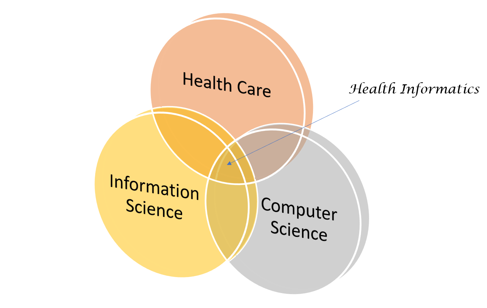

About
- A skilled multidisciplinary informatician with 9 years of experience in database design, data manipulation and informatics to support scientific research (e.g. oncology, drug discovery/development, telehealth and clinical trials).
- Looking to recommence my professional career after devoting the last 5 years to raising a family.
- Experienced in software design and development.
- Strong track record in developing interfaces to allow users to view/understand data.
- Excellent research and writing skills with 5 publications as first author.
- Experience in training and mentoring (supervised an undergraduate summer placement).
Education
| Qualifications |
University |
Year |
| PGCert in Clinical Research. |
University of Liverpool, Liverpool. |
2016 |
| PhD in Informatics for devices within telehealth systems for monitoring chronic diseases. |
Cranfield University, Cranfield. |
2011 |
| MRes (Merit) in Bioinformatics and Computational Biology. |
University of Leeds, Leeds. |
2006 |
| BSc and MEng (2.1) in Computer Science. |
University of Manchester, Manchester. |
2003 |
Career History (Professional)
Fortress Medicare Limited, Wigan. Director. Jan. 2017 – Present.
- Bookkeeping and Finance.
- Human Resources and Administration.
Department of Biostatistics/Institute of Child Health, University of Liverpool. NIHR Research Methods Fellow in Health Informatics. Mar. 2013 – Feb. 2016
- Designed and developed an electronic diary (using C# and MySQL) to capture data for a urinary incontinence study. Captured requirements from health professionals, then designed the database schema and implemented the diary.
- Research into the use of electronic health records (EHRs) to support the assessment of recruitment feasibility in clinical trials.
- Survey of all UK Clinical Trial Units to identify the electronic databases being used to support trials.
- Co-supervised an undergraduate student on a short project to identify whether patients communicated information about their health (rheumatoid arthritis) on social media (Twitter); I created a thesaurus of alternative words that patients use to describe their condition which was used by the student for the text mining aspect of the project.

School of Applied Sciences, Cranfield University. PhD Researcher. Jan. 2008 – Jul. 2011
The research aim was to model and analyse information generation and exchange in telehealth systems and point-of-care devices in managing chronic diseases. Some key achievements include:
- Reviewing literature to ascertain the state-of-the-art in informatics for point-of-care devices.
- Survey of UK based telehealth organisations, including content analysis and creating symbols to represent their telehealth offerings using Microsoft Visio.
- Compiling capabilities of telehealth offerings and analysing their characteristics.
- Defining informatics criteria to evaluate 100 glucometers (by evaluating their manuals) to ascertain how much information was provided to enable users to make the right decision.
- Identifying and evaluating intermediate devices between point-of-care devices, patients and health professionals.
- In partnership with Y Touring, I participated in a public engagement project about Telehealth with a group of engineers from Cranfield University. It involved working with community groups and schools to raise awareness of the impact and ethical questions related to Telehealth. More details can be found at: https://ytouringtelehealth.wordpress.com/
Astex Therapeutics, Cambridge. Research Scientist. Sep. 2006 – Dec. 2007
- Interacted with scientists to ascertain their requirements for developing web-based applications.
- Created web-based interfaces to an Oracle database using Perl.
- Restructured and developed an application which integrated several databases to increase the speed of database queries and improve its usability for scientists.
Department of Oncology, University of Cambridge. Research Assistant. Dec. 2003 – Aug. 2005
- Managed and analysed databases for breast cancer studies to support scientists.
- Prepared and compiled personalised questionnaires for a successful follow up study on ovarian cancer and created a website for the study.